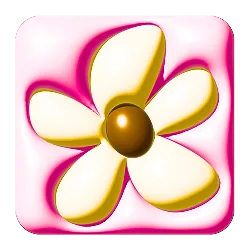
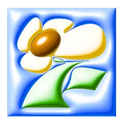

{{c.ch}}
©2026
A record of past projects and experiments, and an ongoing exploration of digital experience.
- 26JOLINCAI.WebsiteJOLIN CAI
- 26JIMBROTHERS.Branding
- 26DELFTWARE.Branding
- 25SUZAKUCURRY SHOP.Website
- 25VENTIVENTI.Website
- 25STARLUXAIRLINES.Key Visual · Website
- 25OFFICE OF THE PRESIDENTREPUBLIC OF CHINA (TAIWAN).Branding · Website
- 25HOLA.Website
- 24HUGH.Website
- 24BEANFUN.Website
- 23ITRAQ.Website
- 22TAIPEIMUSIC CENTER.Website
Design is the wind you don’t see, only what it moves.Design is the wind you don’t see,
only what it moves.
Scroll or Press
WZ.PORTFOLIO
Local Time
Taipei — {{clockTxt}}
All Projects *(9)Info
A record of past projects and experiments, and an ongoing exploration of digital experience.
01/10
clickScrollorPress
WZ.PORTFOLIO
april8742@gmail.com
@wuzhung
©2026
Hey there, I’m wuzhung — a digital designer working across websites, interfaces, and visual experiences. I approach design as a process of structure, interaction, and refinement.
嗨，我是 wuzhung，一名數位設計師，專注於網站、介面與視覺體驗。我將設計視為一段關於結構、互動與精煉的過程。

